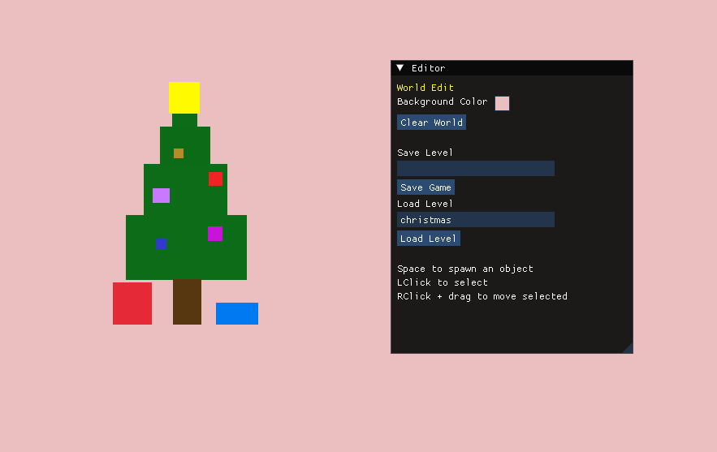
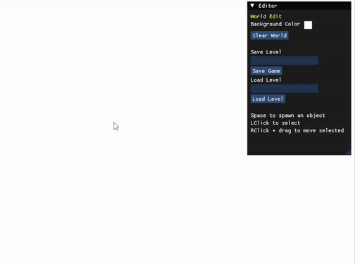
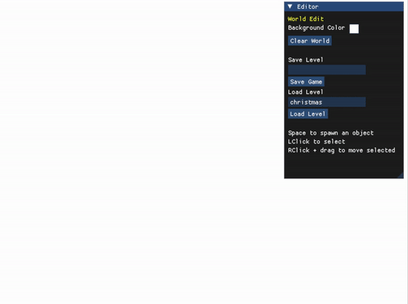
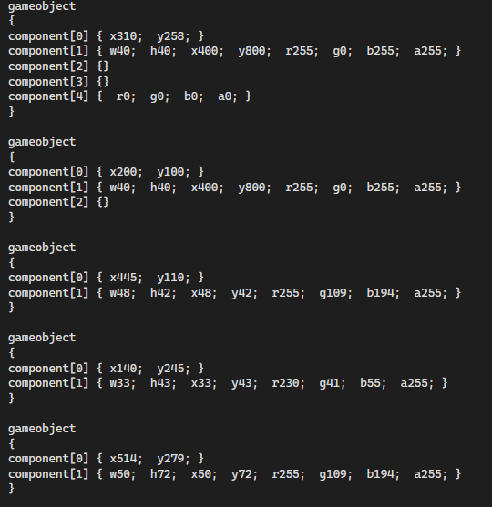

Editor Tooling
Scene spawning, selection, dragging, property editing, world controls, and save/load controls through ImGui.
ENGINE PROGRAMMER · TOOLS & SYSTEMS
C++ / RAYLIB / DEAR IMGUI
Holly Jolly Engine is a focused C++ level-editor prototype built with raylib and Dear ImGui. It provides a complete authoring loop: spawn 2D game objects, select them in the scene, edit their properties, attach gameplay behavior, save a level to text, and load it back into the engine.
Behind the editor, a component-based object model connects scene data with rendering, input, collision, memory management, and serialization. Building this complete pipeline gave me hands-on experience with the architecture behind game-development tools.

01 / OVERVIEW
Holly Jolly Engine explores what happens behind a scene editor rather than relying on an existing game engine. The resulting 2D tool connects authoring and runtime behavior inside the same application.
Users can spawn rectangles into the scene, select them by clicking their rendered bounds, move them with the mouse, edit position, size, and color through ImGui, add player movement behavior, clear the world, save a level, and load it again. Behind the editor, the WorldManager connects the object registry, component storage, input, collision checks, rendering, and persistence.
My work focused on connecting the ImGui editor to a component-based runtime, including object creation, pooled component storage, stack allocation, raylib rendering and input, and text-based level serialization.
Scene spawning, selection, dragging, property editing, world controls, and save/load controls through ImGui.
GameObjects composed from focused transform, renderer, collider, controller, and collision-response components.
Object registration, component updates, input, rectangle collision checks, and raylib rendering.
Reusable component pools, temporary stack allocation, and a readable component-based level format.
02 / EDITOR
The editor is embedded directly into the raylib application through Dear ImGui. World controls handle background color, clearing, filenames, and save/load actions; a separate object panel exposes the selected rectangle’s transform, dimensions, color, and optional player behavior.
Selection begins with the rendered bounds. A left click checks the mouse point against each object rectangle, opens the object editor, and copies the current values into its controls. Holding the right mouse button then moves the selected object by updating its transform around the cursor.
EDITOR WORKFLOW

03 / COMPONENTS
Each GameObject owns an ID and holds direct references to the focused components that give it data or behavior. This is a compact component-based object model—not a full data-oriented ECS. The WorldManager also keeps type-specific component lists so it can update controllers, test colliders, and render rectangles without asking every object to run every system.
BaseComponent connects a component back to its GameObject ID. That shared identifier lets runtime systems find the related transform, renderer, or collider through the object registry when one component needs data held by another.
COMPONENT RELATIONSHIPS
Stores the object’s x and y position.
Stores width, height, offsets, and color for raylib drawing.
Tracks overlap state from rectangle collision checks.
Moves the transform from WASD or arrow-key input.
Switches the renderer between default and collision colors.

COMPONENT ALLOCATION
Each component type has its own templated ComponentPool. The pool reserves a set of typed slots, tracks which slots are in use, constructs a component in the next available slot, and returns that address to both the GameObject and the type-specific runtime list.
Deleting a component marks its slot available and invokes its destructor. The design is intended to recycle known storage; the project did not record performance benchmarks.
04 / RUNTIME
WorldManager is the central coordinator. It owns the object registry, component pools and update lists, current selection, object IDs, editor state, and save/load entry points. The main program creates this manager after opening the raylib window, hands it the game loop, and destroys it during shutdown.
During a frame, editor and direct input can change the world before the runtime updates player controllers, evaluates rectangle overlaps, applies collision-driven color changes, and renders every stored rectangle. Rendering resolves each renderer’s GameObject ID back through the registry to read its transform.
PlayerController supports WASD and arrow keys by changing the attached transform.
RectangleCollider delegates overlap tests to raylib’s rectangle collision function.
CollisionColorChanger updates renderer color only when collision state changes.
RectangleRenderer supplies dimensions and color while the registry supplies position.
05 / PERSISTENCE
Saving walks the object registry and writes one readable block per GameObject. Component IDs identify which parts belong to the object; compact key-value pairs hold transform, renderer, and color data, while behavior-only components can be represented by an empty block.
Loading clears the current world, reads the same markers, creates a new GameObject for each block, acquires components from their pools, and assigns parsed values. This closes the editor loop without introducing a separate asset format or external serializer.
SAVE AND LOAD


06 / TAKEAWAYS
Building the editor and runtime together made the boundaries between tools, stored data, and frame logic concrete. A change in ImGui had to flow through GameObject references and component storage, then remain correct during input, collision, rendering, and serialization.
The project’s focused scope made its tradeoffs visible. The architecture is intentionally narrow: rectangles, a fixed set of component types, direct coordination through WorldManager, and a readable custom format. The finished prototype demonstrates a complete end-to-end authoring loop and gave me practical experience designing systems that established engines normally provide.
04 / Contact
Open to gameplay, tools, and technical opportunities.
jeffreypopek@gmail.com ↗